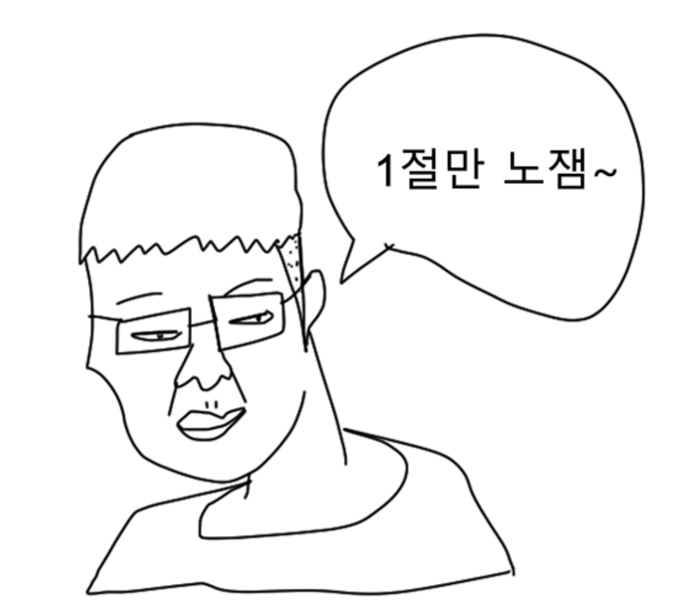

내가 진짜 쿨찐! 찐쿨찐!
찐쿨찐 특: 자신이 제일 논리적이고 합리적이라고 생각함. 보기 불편한게 많음. 인싸들이 하는거 전혀 관심없고 유치해서 하고 싶지도 않음. 지적받는거 극혐함. 운동하고 춤추는거 별로 안좋아함. 너무 진지해 지는거 딱 질색임.
찐쿨찐 특: 자신이 제일 논리적이고 합리적이라고 생각함. 보기 불편한게 많음. 인싸들이 하는거 전혀 관심없고 유치해서 하고 싶지도 않음. 지적받는거 극혐함. 운동하고 춤추는거 별로 안좋아함. 너무 진지해 지는거 딱 질색임.